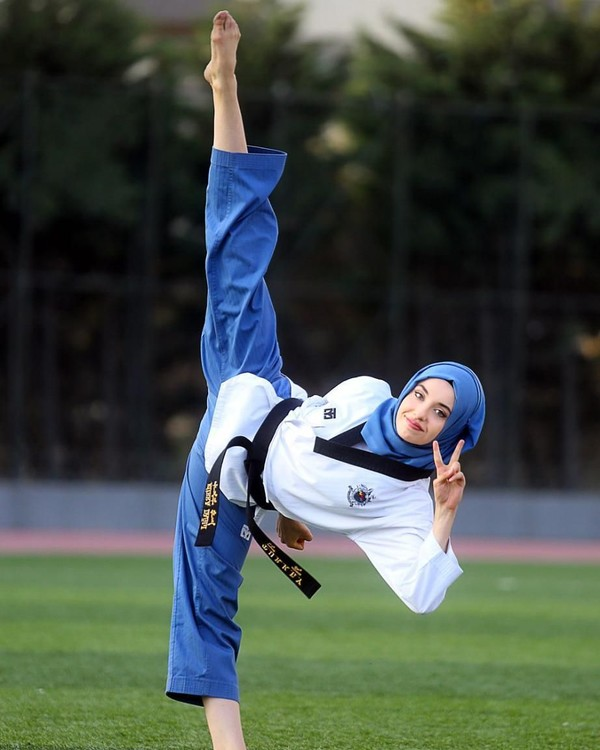
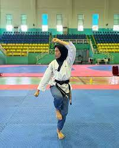

Viranda Rahmatya Azzahroh
Taekwondo adalah salah satu jenis cabang olah raga bela diri modern yang berasal dari negara Korea. Taekwondo ini berasal dari beberapa katai yaitu “Tae” yang memiliki arti kaki yang menghancurkan dengan tendangan. Dan “Kwon” yang memiliki makna tangan atau dengan kata lain menghantam dan mempertahankan diri dengan menggunakan tangan, dan “Do” yang memiliki arti cara mendisiplinkan diri. Dengan demikian maka Taekwondo ini merupakan olahraga seni bela diri yang mengandalkan teknik kaki dan juga tangan kosong dalam menaklukan lawannya.
Sejarah olahraga bela diri Taekwondo ini sudah berkembang sejak tahun 37 M, tepatnya pada masa pemerintahan dinasti Koogoryo di Korea. Pada saat itu, masyarakat sekitar menyebut olahraga bela diri Taekwondo ini dengan beberapa nama yang berbeda–beda, mulai dari Taekkyon, Taeyon, dan Subak. Sejak saat itu juga Taekwondo sudah menjadi salah satu seni pertahanan bela diri yang digunakan oleh para kesatria dinasti Chosun kuno, dinasti Koryo, dan kerajaan Shila pada masa kejayaannya. Selain itu, Taekwondo juga sering digunakan sebagai pertunjukan acara ritual yang dilakukan oleh negara Korea. Pada saat Korea merdeka yaitu tepatnya pada tahun 1945, masyarakat Korea terus berusaha dengan keras untuk berlatih dan mengembangkan seni bela diri Taekwondo ini. Karena memang Taekwondo ini merupakan salah satu seni bela diri tradisional dari Korea. Pada akhirnya, Taekwondo terus tumbuh dengan pesat sampai ke semua penjuru dunia dan sering di pertandingkan pada ajang olimpiade terbesar 4 tahunan. Kemudian pada tahun 1973, tepatnya yaitu pada tanggal 28 Mei, terbentuk sebuah organisasi yang bernama WTF (World Taekwondo Federation) yang bermarkas di Kukkiwon, Korea Selatan. Pada saat itu, Kim Un Young di tunjuk sebagai presiden pertama pada organisasi WTF tersebut. Hingga saat ini, WTF sudah mempunyai anggota lebih dari 186 negara yang ada di seluruh dunia.
 